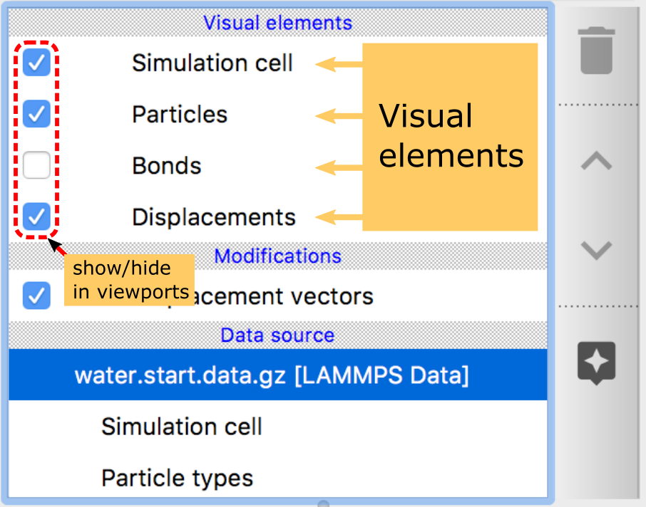

Visual elements
{kind=link}
OVITO distinguishes between the underlying data and the visual representations produced from that data.
One typical example for this separation between data objects
and their visual representation is the Position particle
property, which holds the XYZ coordinates of a set of point-like particles. To visualize this data, OVITO automatically creates
a Particles visual element, which is responsible for rendering a
corresponding set of spheres in the viewports, using the Position particle property as source data.
The Particles visual element provides several parameters that let you control
the visual appearance of the particles, e.g. the glyph shape (spheres, discs, cubes, etc.).
This separation of data objects and visual elements provides additional flexibility within OVITO. It becomes possible to visualize the same data in several different ways (multiple visual elements based on the same source data) and to visualize multiple datasets side by side (one visual element rendering several data objects in the same way).
Visual elements are usually created automatically by OVITO’s data pipeline system alongside with the imported or computed data. They all appear under the Visual elements section of the pipeline editor shown in the screenshot. You can disable individual visual elements using the check boxes next to them in the pipeline editor. This will turn off the visualization of the corresponding data in the interactive viewports and in rendered images.
Visual element |
Description |
|---|---|
Renders a set of particles using different glyph shapes |
|
Renders the bonds between particles as cylinders |
|
Renders arrow glyphs to graphically represent a vector particle property |
|
Renders the simulation box as a wireframe geometry |
|
Renders a smooth polygonal surface mesh |
|
Renders a triangle mesh loaded from a mesh geometry file |
|
Renders a voxel grid |
|
Renders a set of continuous lines to visualize the particle trajectories created with the Generate trajectory lines modifier or drawn using the |
|
Renders dislocation lines extracted by the Dislocation analysis (DXA) modifier |
See also
ovito.vis.DataVis (Python API)